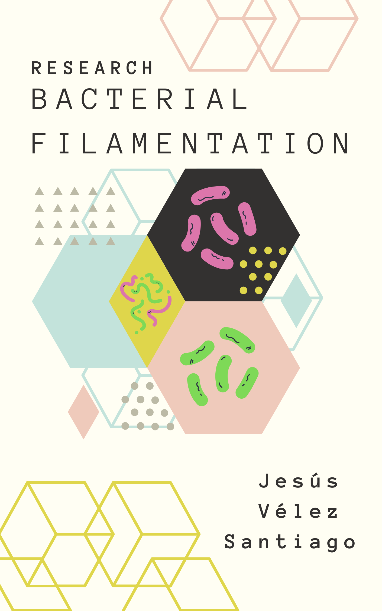

Bacterial filamentation: a bet for survival in stressful environments
![]()

Welcome
Welcome to the online version of my research work for the bachelor’s degree in Genomic Sciences from the National Autonomous University of Mexico at the Center for Genomic Sciences. We conducted a detailed research with the necessary code to ensure reproducibility in this work. For a more detailed research analysis, please refer to our pre-print Antibiotic heteroresistance generated by multi-copy plasmids. Please enjoy.
Jesús Vélez Santiago
Abstract
Scientists have extensively studied the mechanisms that orchestrate the growth and division of bacterial cells. Cells adapt their shape and dimensions in response to variations in the intracellular and extracellular environments by integrating information about the presence of nutrients or harmful agents in the decision to grow or divide. Filamentation is a process that occurs when rod-shaped cells stop dividing but continue to grow, thus producing elongated cells (Wang et al. 2014; Wang, Yin, and Chen 2014; Jaimes-Lizcano, Hunn, and Papadopoulos 2014; Sheryl S. Justice et al. 2008). Some cells can naturally grow as filamentous, while others only do so under stressful conditions (Cayron, Dedieu, and Lesterlin 2020; S. S. Justice et al. 2006). Here, we use mathematical modeling and computational simulations to evaluate a toxic agent’s intracellular concentration as a function of cell length. We show that filamentation can act as a strategy that promotes the resilience of a bacterial population under stressful environmental conditions.
Acknowledgements
I offer this work with gratitude to all the people who have been part of my personal and intellectual growth. Thanks.